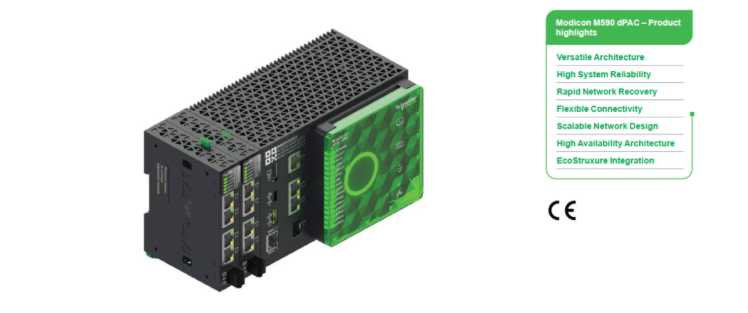

EcoStruxure Automation Expert Version 25.0, is pleased to introduce our new next-generation Distributed Programmable Automation Controller designed to meet the evolving demands of modern industrial environments : Modicon M590 dPAC.
Engineered for performance, scalability, and reliability, it empowers businesses to streamline operations, enhance connectivity, and continuous control across diverse applications.

The M590 dPAC serves as the central brain of industrial automation systems, managing and coordinating processes with precision and speed. It is ideal for industries requiring high availability, robust communication, and seamless integration with existing infrastructure.
According to different application scenarios, Modicon M590 dPAC can provide three types of devices: Standalone controller, Redundant controller, and Network expansion module:
Standalone controller has rich interfaces and offers versatile connectivity to seamlessly integrate with diverse devices.
Redundant controller has powerful performance, and multiple redundant controllers form a redundant control system, ensuring with uptime and operational continuity.
Network expansion module is used to boost the network performance and scalability of the controller.
To cope with various complex working conditions, Modicon M590 dPAC is engineered for superior reliability in demanding environments:
Redundant controllers can build redundant control systems.
The controller and expansion module have an RSTP interface. Enabling the RSTP function allows the system to recover quickly from network failures.
Data persistent function during power failure.
Real-time clock, enables precise event tracking and insightful diagnostics.
ECC memory improves reliability by reducing the likelihood of random access errors in memory.
Versatile Architecture: Available in Standalone, Redundant, and Network Expansion configurations to suit various operational needs.
High Availability: Redundant controllers enables uninterrupted control, minimizing downtime in mission-critical applications.
Advanced Connectivity: Supports Ethernet, RS232/RS485, USB, and Display Port interfaces for flexible device integration.
Scalable Networking: Expandable up to 6 LAN ports with support for RSTP ring networks, enabling resilient and efficient communication.
EcoStruxure™ Integration: Seamlessly integrates with Schneider Electric’s EcoStruxure Automation Expert platform for enhanced HMI/SCADA capabilities.
Reliable Performance: Features ECC memory, real-time clock, and data persistent during power loss for dependable operation in harsh environments.
Whether you’re optimizing a single process or managing a complex automation network, the Modicon M590 dPAC delivers the intelligence and adaptability needed to drive industrial success.
EcoStruxure Automation Expert represents a software-defined approach to designing, building, operating, and maintaining industrial automation systems that offers a unique technology mix.
Complexity mastered
Systems, devices, services, and assets are natively represented as ready-to-use software objects called composite automation types (CATs) that encapsulate internal behaviour and simplify functional interfaces. An object-oriented approach promotes code reuse enables standardization, and helps manage complexity while providing the fundamental building blocks for the creation of cyber-physical systems. CAT objects follow a type/ instance relation and can be combined to create new objects that encapsulate:
Control logic
HMI/SCADA visualization
I/O and device communications
Simulation and test rigging
Documentation
Decoupling the application from implementation
EcoStruxure Automation Expert allows the engineer to generate their automation control strategies without the need for the hardware architecture by decoupling the application from the runtime deployment. This allows professionals to focus independently on each task throughout the project lifecycle, combining the capabilities of classic PLC with DCS control approaches. Applications are portable, reusable, and interoperable across runtime platforms, meaning deployment decisions are made just in time and on the fly, enabling exceptional system agility.
Efficient engineering
EcoStruxure Automation Expert Build Time provides a single, modular engineering environment for all tasks needed to engineer, monitor, and manage the complete automation system including hardware and software, control, and visualization. It automates low value engineering and integration tasks, reducing engineering effort and sources of error by leveraging Asset Link to perform digital engineering. Complex functions can be encapsulated into manageable objects, enabling non-technical users to understand and manage complex systems. Cross communications are transparent and implicit regardless of physical location, requiring zero engineering consideration.
Common runtime environment
Through the implementation of the shared source Runtime engine provided by universalautomation.org across hardware and software platforms, exceptional re-usability, scalability, and architectural flexibility are now available. Application portability provides cost savings through the decoupling of the lifecycles of software and hardware systems.
Simple system integration
EcoStruxure Automation Expert was designed with the complete lifecycle of an automation system in mind, with functions to facilitate management and monitoring of multiple assets and devices at scale. With a single user environment covering the entire system scope including third-party devices, orchestration of complex, heterogenous systems becomes simpler.
Native IT integration
Modern automation systems generate increased value when coupled with business information and hence wider IT ecosystems. EcoStruxure Automation Expert provides an expandable platform for Industry 4.0 solutions with support for high-level programming, modular systems design, and open standards. Thanks to event-driven execution and object-oriented design, EcoStruxure Automation Expert applies to IT programming language standards.
Cybersecurity
EcoStruxure Automation Expert includes robust support for cybersecurity including credential management and secure communications. User and device credentials are managed by the EcoStruxure Automation Expert Build Time environment, and secure communications are available between controllers, HMI, SCADA, and third- party devices.